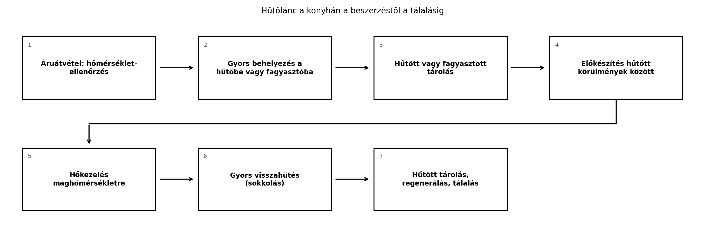

Reggel áruátvételkor ezt látod: az egyik tejföl doboza felfúvódott, a csirkehús felülete nyákos, a zöldsaláta fonnyadt és savanyú szagú. Ha ezeket felhasználod, a vendég rosszul lehet. Ha viszont tudod, mitől romlik az élelmiszer, és hogyan lassíthatod vagy akadályozhatod meg a romlást, időben kiválogatod a rossz árut, és a jó árut is biztonságosan tárolod. Ebben az alfejezetben a romlás jeleit és okait, valamint a fizikai tartósítási módszereket tanuljuk meg: hűtést, fagyasztást, gyors visszahűtést, hőkezelést, szárítást, besugárzást és a védőgázas vagy vákuumos csomagolást.
Képzeld el, hogy egy főtt csirkehúst kiteszel a meleg pultra. Az első két órában alig változik, utána egyre gyorsabban szaporodnak benne a baktériumok. A hűtőlánc éppen ezt a szaporodást fékezi le. Az alábbi folyamatábra a hűtött élelmiszer útját mutatja a konyhán, a beszerzéstől a tálalásig. A bejelölt pontokon hőmérsékletet mérünk, és a mérést dokumentáljuk.

A folyamat minden lépése arra szolgál, hogy az élelmiszer minél kevesebb időt töltsön a baktériumok gyors szaporodását lehetővé tevő hőmérsékleti tartományban. Ezt a tartományt tanulási értékként hozzávetőlegesen +5 °C és +60 °C közé tesszük, de az üzemi határértéket a saját HACCP-terv rögzíti (ellenőrizendő: pontos határok).
Definíció. Élelmiszerromlásnak nevezzük azt a folyamatot, amelyben az élelmiszer érzékszervi tulajdonságai, tápértéke vagy élelmiszer-biztonsági minősége kedvezőtlenül megváltozik, és az étel élvezhetetlenné vagy egészségre kockázatossá válik.
A romlásnak négy fő oka lehet: mikrobiológiai, enzimes, kémiai és fizikai. Ezek gyakran együtt jelentkeznek.
| Romlás típusa | Fő ok | Jellemző jelek | Példa a konyhán | Megelőzés |
|---|---|---|---|---|
| Mikrobiológiai | Baktérium, penész, élesztő szaporodik | Nyák, bűz, felfúvódás, színváltozás | Hús nyálkás felülete, tejföl felfúvódása | Hűtés, hőkezelés, tiszta munka |
| Enzimes | Saját enzimek bontják a sejteket | Barnulás, puhulás, ízvesztés | Vágott alma barnulása, túlérett banán | Hűtés, savazás, blansírozás |
| Kémiai | Oxigén, fény, fémek hatása | Avas szag, keserű íz, színkifakulás | Növényi olaj avasodása, sajt zsírosodása | Fénytől, levegőtől védve tárolás |
| Fizikai | Kiszáradás, fagyási károsodás, törés | Szikkadás, jégkristály, szétesés | Kenyér szikkadása, fagyasztott hús csepegése | Megfelelő csomagolás, páratartalom |
Szabály. A romlott élelmiszert nem kóstoljuk meg, és nem próbáljuk „megmenteni” erős fűszerezéssel vagy látványos hőkezeléssel, ha már biztonsági romlás jeleit mutatja. A hőkezelés sok baktériumot elpusztíthat, de a már képződött méreganyagokat nem feltétlenül bontja el. Ezért először mindig az érzékszervi jeleket és a tárolási hőmérsékletet ellenőrizzük.
A fizikai tartósítás lényege, hogy hőmérséklet, vízelvonás, sugárzás vagy a csomagolási légtér megváltoztatásával gátoljuk a mikrobák szaporodását, az enzimek működését és a kémiai romlást.
Definíció. Fizikai tartósításnak nevezzük azokat az eljárásokat, amelyek fizikai hatással – leggyakrabban hideggel, hővel, vízelvonással, sugárzással vagy védőgázas csomagolással – növelik az élelmiszer eltarthatóságát.
Az egyes módszereket mindig a nyersanyag és a kívánt eltarthatósági idő alapján választjuk ki. A friss halhoz hűtés, a hosszú tárolásra szánt húshoz fagyasztás, a tejhez pasztőrözés vagy UHT, a gombához szárítás illik.
Szabály. A hűtés nem pusztítja el a mikrobákat, csak lassítja a szaporodásukat. A hűtőben tárolt élelmiszert ezért mindig lefedve, címkézve, a nyers és kész ételt elkülönítve tároljuk.
A hűtőszekrény tanulási érték szerinti hőmérséklete 0–5 °C (sok HACCP-terv szigorúbb, +4 °C-os határt ír elő), a fagyasztóé legfeljebb −18 °C (ellenőrizendő: üzemi HACCP-terv, NÉBIH-útmutató, gyártói jelölés). A hűtő levegője mellett az élelmiszer maghőmérsékletét is mérni kell, mert a levegő hőmérséklete nem mindig egyezik meg a beszállított áru belső hőmérsékletével.
A hűtőt ne töltsd túl, mert a hideg levegő nem tud áramlani. A meleg ételt ne tedd forrón a hűtőbe, mert felmelegíti a hűtőben lévő többi élelmiszert. Először gyorsan előhűtjük, majd lefedve tesszük be.
A fagyasztás −18 °C alatt már nemcsak lassítja, hanem gyakorlatilag gátolja a mikrobák szaporodását. A fagyasztás azonban nem sterilizál: a spórák és egyes mikrobák túlélhetik, ezért a felengedett élelmiszert úgy kezeljük, mint a frisset. A lassú fagyasztás nagy jégkristályokat képez, amelyek roncsolják a sejteket, ezért a felengedés után több csepegési veszteség keletkezik. A gyorsfagyasztás kisebb kristályokat eredményez, így jobb az állag.
A gyors visszahűtés vagy sokkolás a főtt ételek lehűtésére szolgál. A kész ételt sekély, nagyméretű edénybe tesszük, hideg vízfürdőbe állíthatjuk, vagy erre alkalmas sokkoló hűtőszekrényben hűtjük. A cél, hogy az étel hőmérséklete a lehető leggyorsabban kerüljön a hűtőtárolási tartományba, és ne maradjon a veszélyes hőmérsékleti zónában: a főzés végétől 2 órán belül 20 °C alá, további 4 órán belül 5 °C alá kell jutnia (összesen legfeljebb 6 óra; tanulási érték, ellenőrizendő: NÉBIH-útmutató / hatályos rendelet / HACCP-terv).
Hogy miért ennyire fontos az edény formája, azt az alábbi szemléltető lehűlési görbék mutatják. Mindhárom étel 85 °C-ról indul. A mély, fedett edényben (folytonos vonal) a hő csak lassan jut ki a vastag rétegből: a görbe órákig a sraffozott veszélyes zónában marad. A lapos, fedetlen edény (szaggatott vonal) és a sokkoló (pontozott vonal) ugyanezt a zónát töredék idő alatt teszi meg.
A görbék egyszerű lehűlési modellből számolt tanulási adatok (Newton-féle lehűlés, a jellemző idők: mély edény ≈ 180 perc, lapos ≈ 45 perc, sokkoló ≈ 20 perc), nem mérések; a valós időt maghőmérővel kell ellenőrizni, a határidőt a HACCP-terv adja. A tanulság: a nagy adag meleg ételt oszd szét lapos edényekbe, és fedő nélkül, gyorsan hűtsd. A HTML-kiadásban a rétegvastagság, a fedő és a hűtési mód állításával kiszámolhatod, mennyi ideig van az étel a veszélyes zónában.
Kritikus pont. Hűtőtárolás és gyors visszahűtés.
A felolvasztás nem szobahőmérsékleten történik, mert a külső rész hamar átmelegszik, miközben a belső még fagyott, és így a felszínen a baktériumok szaporodhatnak.
Biztonságos felolvasztási módok:
Az alábbi ábra a három biztonságos módot (1–3) és a tipikus hibát (4) állítja egymás mellé. Az 1. képen figyeld meg, hogy a felengedő hús a legalsó polcon, peremes tálcán van, így a leve nem csöpöghet a kész ételre; a 3. képen a mikrohullámú kiolvasztást azonnal a hőkezelés követi.
A 4. kép két hibát is mutat: a meleg pulton a hús felszíne már a veszélyes zónában van, miközben a belseje még fagyott, a kicsöpögő lé pedig a kész salátához folyik. A HTML-kiadásban a helyes és a hibás nézet között válthatsz.
A felolvasztás során kicsöpögő lé nyers húsnál fertőzött lehet, ezért ne érintkezzen kész ételekkel, zöldségekkel és tiszta eszközökkel. A felolvasztott ételt már nem fagyasztjuk újra nyersen, mert a közbeni mikrobaszaporodás és a minőségromlás miatt kockázatos.
Megjegyzés. Ha a felengedett nyers húst közben hőkezeltük, a kész étel újrafagyasztása higiéniai szempontból kevésbé kockázatos, de az állaga romolhat. A pontos szabályt az üzemi HACCP-terv és a hatályos útmutató rögzíti (ellenőrizendő: újrafagyasztási tilalom és kivételek).
A hőkezelés a mikrobák elpusztításával és az enzimek gátlásával tartósít. Három fontos eljárást különböztetünk meg.
Pasztőrözés. Olyan kíméletes hőkezelés, amely a kórokozó baktériumok nagy részét elpusztítja, de nem sterilizál. A terméket utána hűteni kell. Jellemző érték: tejnél 63 °C 30 percig vagy 72 °C 15–30 másodpercig (ellenőrizendő: termékcsoportonkénti paraméterek). A pasztőrözés megőrzi az ízt és a hőérzékeny vitaminok nagy részét, viszont rövidebb eltarthatóságot ad.
Sterilezés. Célja a csíramentesítés, ezért 100 °C feletti hőmérsékletet és nyomást alkalmazunk. A sterilizált terméket légmentesen zárjuk, ezért szobahőmérsékleten is hosszan eltartható. A magas hőmérséklet jobban megváltoztatja az ízt, a színt és a vitaminokat.
UHT-hőkezelés. Nagyon magas hőmérsékleten, rövid ideig tartó eljárás, jellemzően 135–150 °C 2–6 másodpercig (ellenőrizendő: pontos technológiai érték). A termék a csomagolásban, bontatlanul hosszan eltartható, felbontás után azonban hűtést igényel.
A konyhán a pasztőrözött tej, UHT-tej, steril konzerv és a hőkezelt savanyúság a leggyakoribb példa. A hőkezeléses tartósítás otthoni változatánál – például házi befőzésnél – a hőfok és az idő betartása élelmiszer-biztonsági kérdés.
A szárítás vízelvonással tartósít. A mikroorganizmusok szaporodásához víz kell, ezért ha a víztartalmat jelentősen csökkentjük, a romlás lelassul. A szárított gyümölcsök, fűszerek, tészták, hüvelyesek és a szárított gomba éppen ezért hűvös, száraz, fénytől védett helyen tárolhatók.
A hagyományos szárítás meleg levegővel, alacsony páratartalom mellett történik. A konyhai gyakorlatban a zöldfűszerek, paradicsom, gomba szárítása a legismertebb. A szárított élelmiszer könnyebb, kisebb helyet foglal, de felhasználás előtt gyakran vissza kell nedvesíteni.
A liofilizálás fagyasztva szárítás: az élelmiszert először gyorsan lefagyasztják, majd vákuumban a benne lévő jég közvetlenül gőzzé alakul. Az így készült termék könnyű, roppanós, és visszanedvesítve jól megőrzi állagát. A vendéglátásban liofilizált gyümölcsökkel, kávéval és kényelmi anyagokkal találkozhatsz.
A besugárzás ionizáló sugárzással csökkenti a mikrobák számát és gátolja a csírázást. Az Európai Unióban szabályozott eljárás, de a vendéglátásban ritkán találkozol vele. A besugárzott élelmiszert a csomagoláson jelölniük kell (ellenőrizendő: hatályos jelölési szabály). A besugárzás nem teszi radioaktívvá az élelmiszert, de a konyhán nincs szerepe abban, hogy a már előkészített ételt megjavítsa.
A vákuumcsomagolás eltávolítja a levegőt, így az oxigént igénylő mikroorganizmusok szaporodása gátolt. Ugyanakkor egyes veszélyes baktériumok – például a Clostridium botulinum – éppen oxigénszegény környezetben szaporodnak jól. Ezért a vákuumcsomagolt, hűtést igénylő élelmiszert szigorúan hűtve, a jelölt lejárati időn belül kell tárolni.
A módosított légterű csomagolás (MAP) nem egyszerűen eltávolítja a levegőt, hanem a csomagolásban lévő gázok arányát változtatja meg. Ezzel a zöldségek barnulása, a hús színromlása és a mikrobaszaporodás is lassítható. A konyhán az ilyen előre csomagolt salátáknál, felvágottaknál és kényelmi termékeknél fontos, hogy sérült, felfúvódott csomagolású árut nem veszünk át.
Szabály. A vákuumcsomagolás és a MAP hosszabb eltarthatóságot adhat, de soha nem helyettesíti a hűtést, ha a termék hűtést igényel. A csomagolás felbontása után a terméket friss élelmiszerként kezeljük, és a gyártói vagy üzemi utasítás szerint tároljuk.
Példa. Egy konyhára 10 kg friss gombát veszünk. A friss gomba víztartalma 90%, a szárított gombáé 12%. Mennyi szárított gomba lesz, és mennyi vizet kell elpárologtatni?
Adott: , friss víztartalom , szárított víztartalom .
Keresett: és az elpárologtatott víz tömege.
A szárazanyag-tartalom a szárítás során nem változik, ezért:
Behelyettesítve:
Az elpárologtatott víz tömege:
Ellenőrzés. A friss gomba szárazanyaga . A szárított gomba 88%-ának kell 1 kg-nak lennie, tehát . Az eredmény nagyságrendje reális.
A romlott élelmiszert érzékszervi vizsgálattal szűrjük ki. A szín, a szag, az állag és a csomagolás állapota adja az első jelzést. A felfúvódott doboz, a nyákos hús, a penészfolt, a savanyú szag, a romlott hal ammóniás szaga azonnali selejtezést jelent.
A tartósított termékeknél is ellenőrzünk:
A minőségellenőrzés nemcsak átvételkor, hanem tárolás közben is folyamatos feladat.
Hiba: a főtt ételt nagy, mély edényben teszik hűtőbe. A nagy tömegű étel belseje sokáig meleg marad, mert a hideg nem hatol be elég gyorsan. Oka: a gyors visszahűtés szabályának figyelmen kívül hagyása. Helyes gyakorlat: sekély edényben, hideg vízfürdővel vagy sokkoló hűtőben, kevergetve, 2 órán belül 20 °C alá, további 4 órán belül 5 °C alá hűtjük le (tanulási érték, ellenőrizendő: HACCP-terv).
Hiba: a felengedett húst visszafagyasztják. A nyers hús közben részben felmelegedett, a baktériumok szaporodhattak, és az újrafagyasztás után is ott maradnak. Oka: a felolvasztási szabályok nem ismertek. Helyes gyakorlat: mindig csak annyit olvasztunk fel, amennyit aznap felhasználunk.
Hiba: a vákuumcsomagolt halat szobahőmérsékleten tartják. A vákuum nem helyettesíti a hűtést, és oxigénszegény környezetben a Clostridium botulinum szaporodhat. Oka: a csomagolás biztonsági határainak félreértése. Helyes gyakorlat: a hűtést igénylő vákuumcsomagolt árut mindig hűtve, a jelölt lejárati időn belül tároljuk.
Egy konyhán a zárás után az egyik dolgozó nem csukta be rendesen a hűtőkamra ajtaját. Reggel a húsok maghőmérséklete 12 °C volt. A szakács érzékszervileg még jónak látta őket, és fel akarta használni, de a konyhafőnök a HACCP-terv szerint járt el. A húsféléket a hőmérsékleti adatok alapján selejtezte, a hűtőt ellenőriztette, és a hőmérsékleti naplóba bejegyezte az eltérést. A vendég nem kapott romlott ételt, viszont az üzlet anyagi veszteséget szenvedett. A tanulság: a hőmérsékleti eltérést nem szabad érzékszervi benyomással felülírni, mert a kórokozók jelenléte nem mindig látható, szagolható vagy kóstolható.
A válaszok a Megoldások elején találhatók.
1. feladat (A) Sorold fel a romlás négy típusát, és mindegyikhez írj egy-egy konyhai jelet!
2. feladat (A) Párosítsd a tartósítási eljárást a megfelelő céllal: pasztőrözés, fagyasztás, szárítás, UHT, vákuumcsomagolás!
3. feladat (B) Állítsd helyes sorrendbe a fagyasztott hal felhasználását: hűtőben felolvasztás, fagyasztóból kivétel, azonnali hőkezelés, áruátvétel hőmérséklet-ellenőrzése, nyers és kész étel különválasztása, hűtött tárolás.
4. feladat (B) Számítsd ki! 5 kg friss zöldség víztartalma 80%, a szárított zöldségé 10%. Mennyi szárított zöldséget kapunk, és mennyi víz távozik?
5. feladat (C) Vákuumcsomagolt, hűtést igénylő füstölt húst kapsz. A csomagolás sértetlen, de 6 órája szobahőmérsékleten felejtették. Mi a döntést megalapozó három lépés? Mit teszel?
6. feladat (D) A hűtőkamra hőmérséklete reggel +10 °C. Írd le a helyesbítő tevékenység lépéseit a CCP-ellenőrzés szerint! Milyen dokumentáció készül?
Önellenőrzés – válaszok
1. feladat (A) Mikrobiológiai: nyákos húsfelület. Enzimes: vágott alma barnulása. Kémiai: olaj avasodása. Fizikai: kenyér szikkadása.
2. feladat (A) Pasztőrözés: kíméletes hőkezelés, utána hűtés kell. Fagyasztás: hideggel gátolja a mikrobaszaporodást. Szárítás: vízelvonással tartósít. UHT: nagyon magas hőmérséklet rövid ideig, bontatlanul hosszan eltartható. Vákuumcsomagolás: oxigént elvonva gátolja az oxigénigényes mikrobákat, de hűtést igényelhet.
3. feladat (B) Helyes sorrend: áruátvétel hőmérséklet-ellenőrzése → fagyasztóból kivétel → hűtőben felolvasztás → nyers és kész étel különválasztása → azonnali hőkezelés → hűtött tárolás.
4. feladat (B) . Elpárologtatott víz: .
5. feladat (C) Első lépés: ellenőrzöm a termék jelölését és a gyártói tárolási hőmérsékletet. Második lépés: mérem a termék maghőmérsékletét, és összevetem a HACCP-terv szerinti határértékkel. Harmadik lépés: ha a hőmérséklet túllépte a biztonságos határt, selejtezem, és az eltérést dokumentálom. A vendégnek nem szolgálom fel.
6. feladat (D) A CCP-ellenőrzés szerint: a hűtő hőmérsékletét feljegyzem, az eltérést jelzem a konyhafőnöknek. Az élelmiszereket ellenőrzöm, a +10 °C-on tárolt hűtést igénylő árut gyorsan áthelyezem egy működő hűtőbe, de a HACCP-terv szerint értékelem, hogy selejtezni kell-e. A hibás hűtőt kizárjuk a használatból, javító szakembert hívunk. A hiba okát, a helyesbítő tevékenységet és a mérési eredményeket a hőmérsékleti naplóban rögzítem.
Az élelmiszerromlás lehet mikrobiológiai, enzimes, kémiai és fizikai. A romlás jelei a nyák, felfúvódás, színváltozás, avas szag, barnulás és kiszáradás. A fizikai tartósítás hideg, hő, vízelvonás, sugárzás vagy csomagolási légtér segítségével lassítja a romlást. A hűtés 0–5 °C-on lassít, a fagyasztás −18 °C-on gátol, de nem sterilizál. A gyors visszahűtés a főtt étel gyors lehűtése a veszélyes hőmérsékleti zónán át. A felolvasztás hűtőben, folyó hideg vízben vagy mikrohullámmal történik, szobahőmérsékleten tilos. A pasztőrözés kíméletes hőkezelés, a sterilezés csíramentesít, az UHT nagyon magas hőmérsékleten rövid ideig hat. A szárítás vízelvonással tartósít, a liofilizálás fagyasztva szárít. A vákuum- és védőgázas csomagolás hűtéssel együtt biztonságos. Továbbvitt eredmény. A hűtés, fagyasztás, gyors visszahűtés és felolvasztás szabályait használjuk a Fizikai-kémiai, kémiai és biológiai tartósítás alfejezetben, amikor a sót, cukrot, savat, füstöt és adalékanyagokat a hideg- és hőkezeléssel kombináljuk.
Forrástípusok: 852/2004/EK élelmiszer-higiéniai rendelet, NÉBIH jó higiéniai gyakorlat útmutatói, Codex Alimentarius HACCP-elvek, üzemi HACCP-terv, gyártói csomagolási és tárolási jelölések, élelmiszeripari technológiai útmutatók. Ellenőrizendő: a hűtő- és fagyasztótárolás pontos határértékei, a veszélyes hőmérsékleti zóna határai, a gyors visszahűtés idő- és hőmérsékleti előírásai, a pasztőrözés, sterilezés és UHT pontos paraméterei termékcsoportonként, a besugárzás jelölési szabálya, valamint az újrafagyasztás tilalmának és kivételeinek hatályos értelmezése.